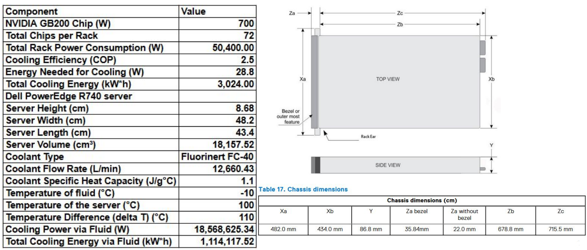
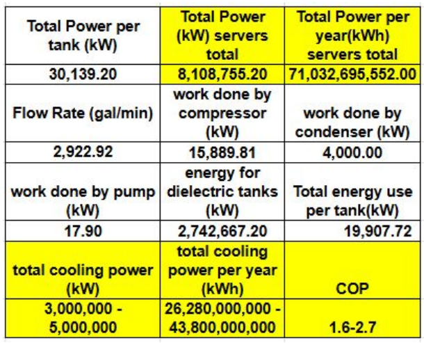
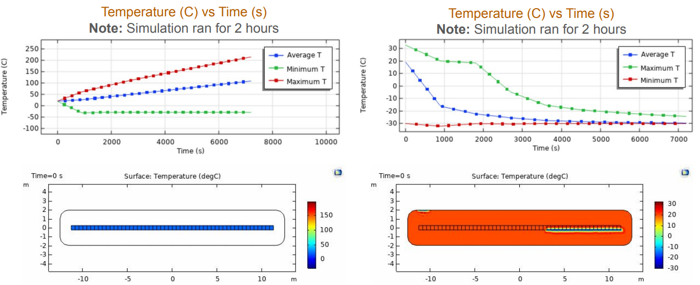
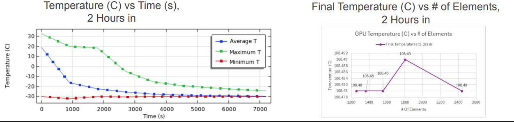
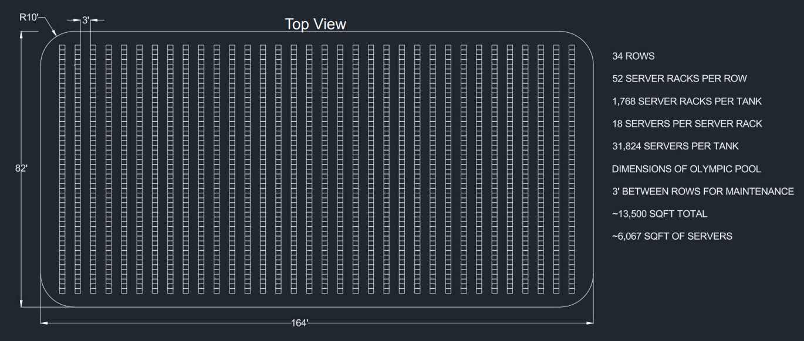
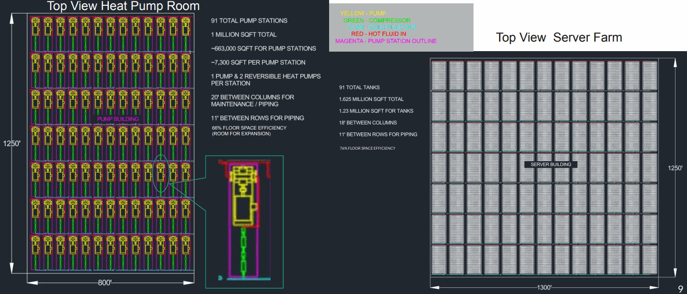

COMSOL • THERMAL FEA • AI DATA CENTERS
FEA Modeling for Extreme Cooling on NVIDIA Blackwell GB200
Thermal-fluid modeling of a single-phase immersion cooling system for high-density AI computing, combining heat transfer, fluid flow, and data-center-scale cooling architecture.

01 / OVERVIEW
Cooling extreme heat loads in next-generation AI hardware.
High-density AI hardware creates intense thermal loads that traditional air cooling struggles to manage.
This project investigated a single-phase immersion cooling architecture for NVIDIA Blackwell GB200 server systems using coupled thermal and fluid-flow simulation in COMSOL Multiphysics.

Server specifications used to establish thermal and cooling requirements
02 / ENGINEERING PROBLEM
Traditional cooling does not scale well to extreme AI power density.
Modern AI server clusters generate exceptionally high heat flux in compact spaces, creating hot spots, efficiency losses, and reliability concerns.
The cooling concept therefore focused on direct immersion of server hardware in a dielectric fluid, allowing heat to be removed through forced liquid convection rather than relying primarily on air cooling.

Engineering calculations used to size and evaluate the cooling system
03 / MODEL PHYSICS
Coupled heat transfer and nonisothermal flow.
The COMSOL model used two-way thermal-fluid coupling, allowing temperature to influence fluid behavior while moving coolant transported heat away from the servers.
Heat Source
Server heat generation was represented as volumetric thermal energy input.
Heat Transfer
Heat transfer in solids and fluid regions modeled thermal transport through the system.
Laminar Flow
Coolant motion was modeled to capture convection and fluid circulation.
Nonisothermal Flow
Temperature and velocity fields were coupled to capture the interaction between flow and heat transport.
Coolant
FC-40 dielectric liquid was selected for the immersion-cooling model.
Boundary Conditions
Inlet temperature and flow conditions were imposed to study cooling performance.
04 / MODEL SETUP
Large-scale immersion tank simulation.
The modeled tank measured approximately 24.99 m × 3.92 m × 3 m and contained a large array of server-rack elements.
The coolant system used 3M Fluorinert FC-40, with a representative inlet temperature of approximately −30 °C and flow velocity near 0.1 m/s.
05 / SIMULATION RESULTS
The immersion system removed heat faster than it accumulated.
Average thermal energy removal rate reported in the cooling validation.
Reduction in internal energy rate over the evaluated four-hour period.
Total thermal energy removed over four hours based on the average rate.
Temperature-distribution simulations showed heat being transported away from the server racks through the circulating coolant.
The system exhibited a net decline in internal thermal energy, indicating that thermal energy was being removed faster than it accumulated.
The project concluded that single-phase immersion cooling could provide an effective and scalable approach for future high-density AI data centers.

COMSOL temperature distribution across the modeled cooling system

Temperature comparison and model convergence analysis
06 / SYSTEM ARCHITECTURE
Cooling the server is only part of the problem.
The project also expanded beyond the local FEA model into a larger cooling-system concept including server tanks, pumps, a heat-pump loop, compression, condensation, and heat rejection.
Immersion Tank
Server hardware transfers heat directly into the dielectric fluid.
Circulation Pump
The coolant is circulated through the system to transport thermal energy away from the servers.
Heat Rejection
A reversible heat-pump architecture was considered for removing heat from the circulating coolant.
07 / FACILITY SCALE
From one server tank to an entire AI data center.
The design study extended the cooling concept to server-farm layouts, pump buildings, maintenance spacing, and large-scale facility planning.
This helped connect the component-level thermal analysis to the system-level engineering required for data-center deployment.

Server tank and cooling-system schematic

Integrated server, tank, pump, and facility cooling-system architecture
08 / FUTURE IMPROVEMENTS
Better flow distribution and thermal control.
Additional spacing between servers could reduce stagnant thermal zones and improve coolant convection.
Side-inlet and side-outlet configurations could produce more symmetric flow and reduce hot pockets near tank corners.
Low-temperature-compatible pumps, reservoirs, and insulated piping would also be required for practical implementation.
09 / ENGINEERING TAKEAWAY
Thermal analysis at both component and system scale.
This project combined finite-element modeling, heat transfer, fluid mechanics, thermodynamics, and systems engineering to evaluate a scalable immersion-cooling strategy for high-density AI hardware.
FULL PROJECT DOCUMENTATION
AI Server Cooling — Final Engineering Presentation
View the complete ME 610 project presentation for additional details on server requirements, cooling-system architecture, engineering calculations, thermal analysis, COMSOL modeling, and system-level design.
View Full Project Presentation ↗10 / TECHNICAL SKILLS